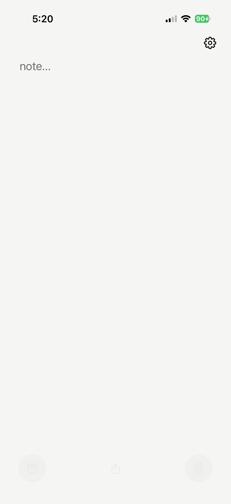
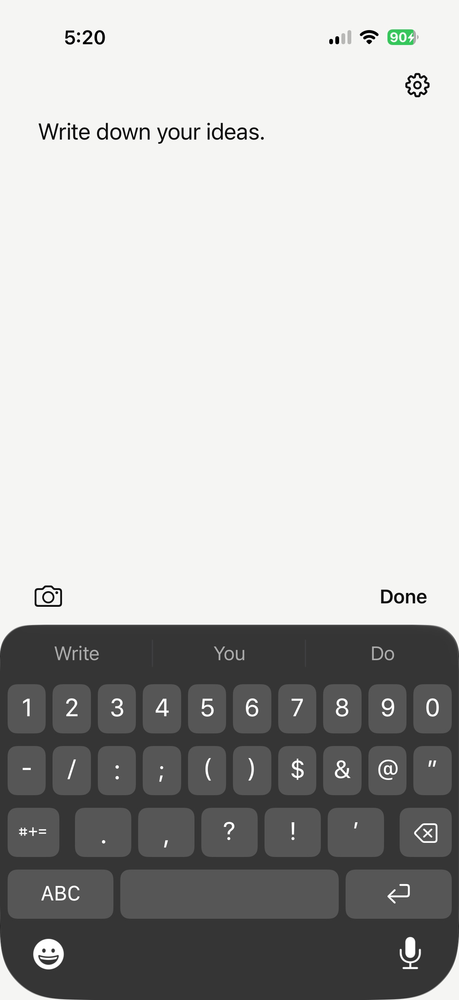
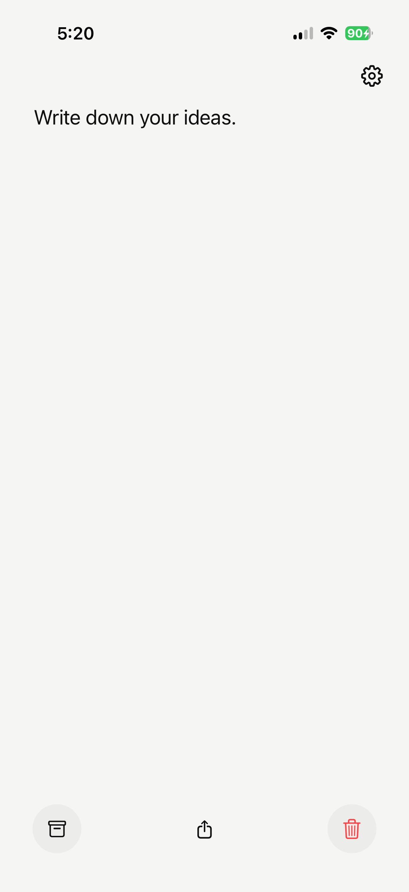
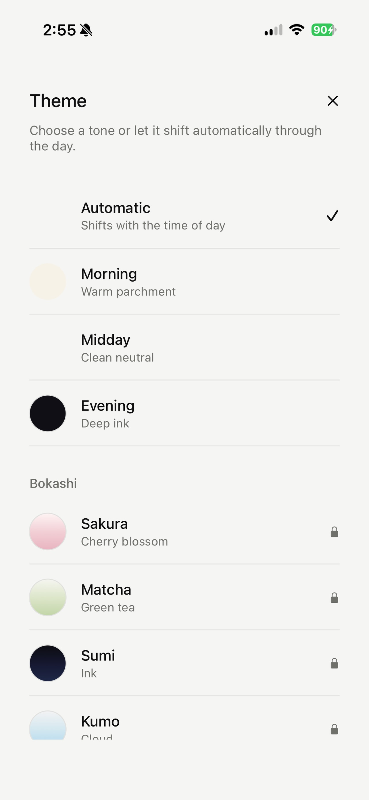
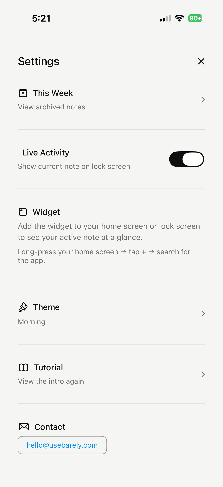
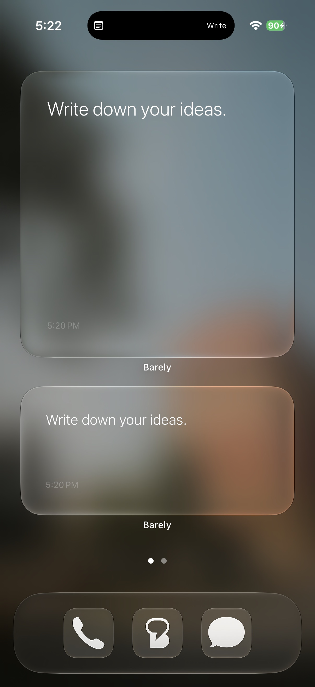
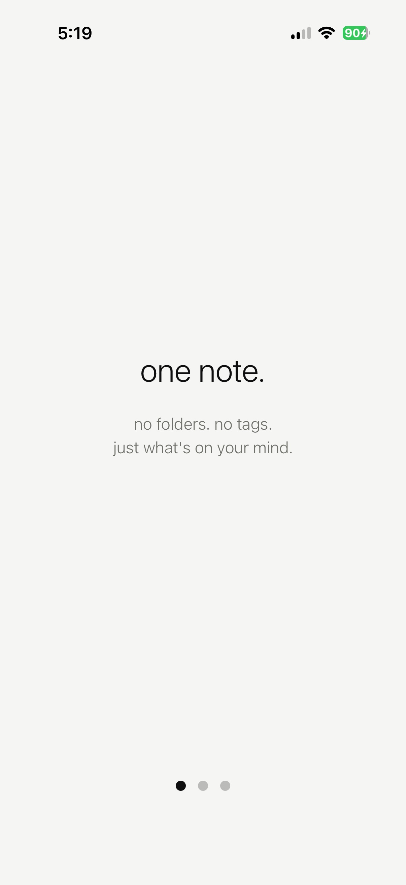
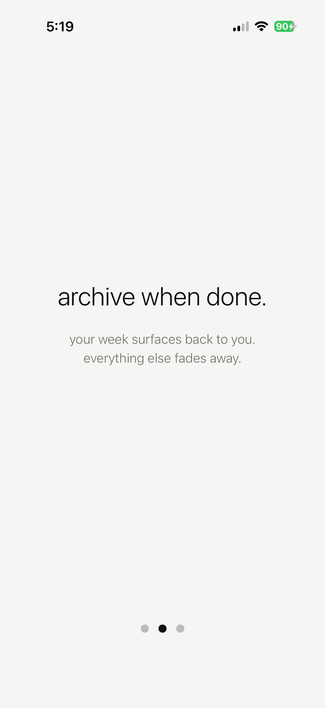
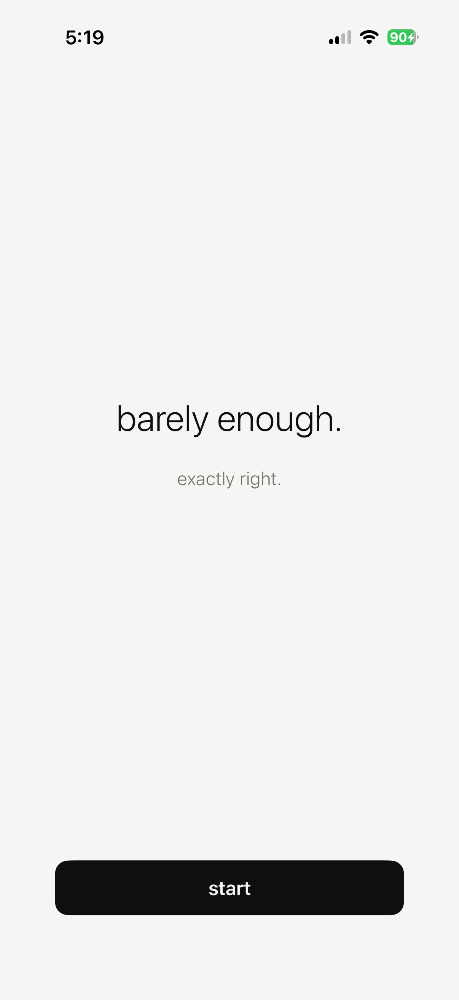

One note was the whole product
Designed, built, and shipped a one-note app for iOS in six weeks. Solo. No team, no client, no handoff.
usebarely.com ↗Notes apps compete on features. Folders, tags, databases, backlinks, AI summaries. Bear has nested tags. Notion has 50+ block types. Apple Notes keeps adding drawing tools, scans, tables, shared folders.
The category assumes that more organization means more clarity. But most people open a notes app to write one thing down, and the interface makes them think about where to put it first.
Instead of competing on features, remove them. One note. No folders. No tags. No second note until the first is archived. The constraint is the product.
Three layers, each one barely enough:
- One note. Open the app, start writing. Archive when done. Blank slate.
- Time-aware tone. The background shifts through the day: warm parchment in the morning, clean neutral at midday, deep ink at night. The app knows what time it is without you telling it.
- Weekly surface. Archived notes live for seven days, then disappear. No records haunting you. Just this week.
One note



No title field. No formatting toolbar. Tap and write. Camera and Done sit above the keyboard. The bottom bar appears when the keyboard dismisses: archive, share, delete. All three disabled when the note is empty.
Time-aware themes


Automatic mode shifts the palette through the day. Manual override locks a tone. Five premium Bokashi themes (Japanese colour gradients) open up with a one-time purchase. Each theme changes the app icon to match.
Widgets and Live Activity

Three home screen sizes, three lock screen formats, and a Live Activity on the Dynamic Island. The note follows you without opening the app. Every keystroke syncs in real time.
Onboarding



Three swipeable screens. The onboarding is the pitch: one note, archive when done, barely enough. Shown once, resettable from settings.
Demo
type, archive, theme shift, widget sync
What you cut is the design
Drawing was the hardest feature to say no to. Tested it. Theme conflicts, gesture conflicts, broke widgets. The strongest version of the app is the one that doesn't have it. Constraint only works if you hold it.
The name carries the brand
Tested 140 names over three rounds. Barely won because it describes the product and the philosophy in one word. "What notes app do you use?" "Barely." The name does the pitch.
Ship the whole surface
Widgets, Live Activity, Dynamic Island, onboarding, share sheet, camera. A notes app that only lives inside itself doesn't feel like a tool. Shipping every iOS surface made it feel native on day one.